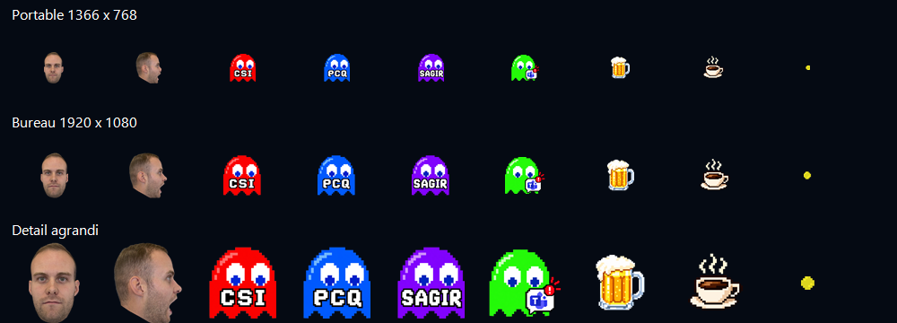

ESPACE JEUX
À vous de jouer.
Deux univers, le temps d’une pause.
Vérification du service d’accès…

PackQC
Le labyrinthe personnalisé du bureau : quatre fantômes, trois vies et quelques pauses bonus.
Jouer à PackQCESPACE JEUX
Deux univers, le temps d’une pause.
Vérification du service d’accès…

Le labyrinthe personnalisé du bureau : quatre fantômes, trois vies et quelques pauses bonus.
Jouer à PackQC